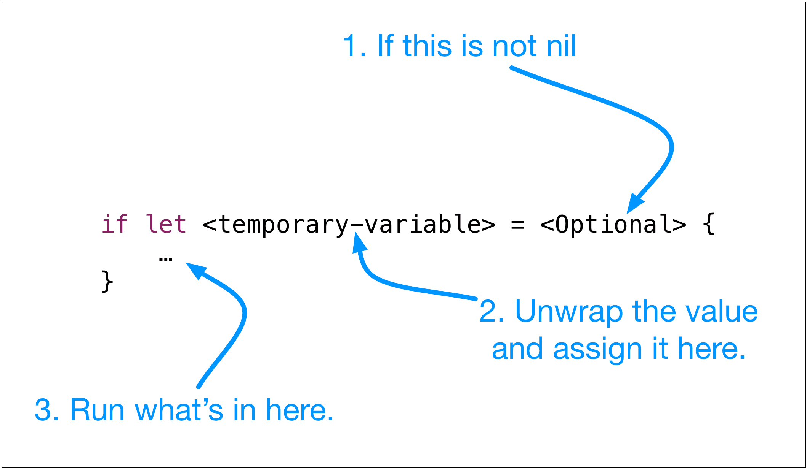

Then add a value to itemCount.
if let, nope, not confusing at all.This might seem like a confusing and weird syntax, if let .... What it's doing for us is this.
nilnil then return false.nil then unwrap the Optional and assign the value to the new temporary variable.Here's the form.

The is a very safe to program for nil values and will make Swift apps more stable.
There is more to the concept of Optionals, but that's a good introduction. We'll do more later.